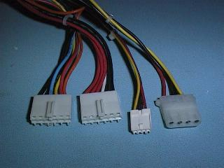

In most desk top cases the power supply is located at the rear and to the right of the computers case and in tower cases the power supply is at the top and rear of the case.
The power supply is usually housed in a black or silver case with warning labels on the top. The warning labels advise everyone not to take off the lid to the power supply as it has some very dangerous high voltages inside. The 240 volt AC mains is rectified inside the case and produces a primary supply voltage of about 340 volts DC that has one side of that supply connected to the common ground, also connected to the case. If a person were to come in contact with the output of the primary side of the supply there is a very low impedance back to the power source (ETSA) and this means very high currents can be supplied, leading to Death or Severe Injury.
The lower high frequency voltages from the secondary windings are then rectified and filtered producing secondary voltages of plus and minus 5 volt and plus and minus 12 volt.
A voltage regulator circuit monitors the secondary voltages and varies the mark to space ration of the chopper signal to keep the 5 volt, in particular, to within 5 percent of 5 volt. The regulator circuit also monitors the primary current and will shut the power supply down if two much current is being supplied. Most PC power supplies only regulate the 5 volt supply as this is the most critical.
In addition to the voltage regulator and over current protection, most PC power supply circuits have a Crow Bar circuit to make sure the 5 volt never rises higher than about 6.5 volt, the logic circuits in a computer would be destroyed by voltages much higher than 5 volt in a short period of time. The Crow Bar circuit basically consists of a Zener Diode and a Silicon Controlled Rectifier (SCR) that simply blows the primary fuse when the 5 volt supply rises to an unsafe level.
The primary input circuit is protected by a fuse and also has a current limiting resistor, usually a Negative Temperature Coefficient resistor, that limits the current through the primary rectifier to a safe value when the power is first turned on. The in-rush current into the primary filter capacitors would be very high without this resistor.
To help reduce Radio Frequency Interference (RFI) the input circuit also has a high frequency filter circuit consisting of two radio frequency chokes (RFC) and four ceramic capacitors. The switching frequency used is usually about 25KHz and the square wave signal driving the primary of the switching supply would produce a great deal of RFI at radio and television broadcasting frequencies.
A switch mode power supply uses a small, highly efficient, high frequency transformer rather than a large, heavy, less efficient, 50 Hz transformer, used in conventional power supplies. This means they are cheaper, lighter, and more efficient than the conventional power supplies. The disadvantages of a switch mode supply is that it is more complex and often not serviceable and they produce significant radio frequency interference (RFI). They can also be dangerous to service.
The latest technologies used in hard disk drives and system boards require far less power than the earlier generation PC computers so even lower power supples would often be sufficient except in cases where the user wishes to use many options.
The Power supply connectorsThere are four types of connectors you will find on a Baby AT style PC power supply. The two six pin connectors plug onto the System Board and the two other connectors are for the disk drives. The small one is for 3.5 inch Floppy drives, the other for 5.25 inch floppy drives and all hard drives. ATX cases use a different power connector for the System Board. |
 |
The disk drive connectors
There are two types of connector used here, the traditional larger disk drive connector used on 5 1/4 floppy disk drives and hard disk drives and the smaller connector seen mostly on the 3 1/2 floppy disk drives. Both of these connectors supply plus 5 volt and 12 volt and have two ground connections. Modern 3 1/2 floppy disk drives use only the plus 5 volt supply.
| Pin | Colour | Used for |
|---|---|---|
| 1 | Yellow | plus 12 volt |
| 2 | Black | 12 volt ground |
| 3 | Black | 5 volt ground |
| 4 | Red | plus 5 volt |
Pin one is the pin on the right hand side of the plug if we look at it from the pin side, with the cut-off corners to the top.
| The smaller connector for 3 1/2 inch floppy drives Pin one is the pin on the left hand side if we look at the power plug from the pin side with the keying strip to the bottom. |
|
| The system board power connectors (Baby AT type case) This connector supplies all four voltages and has multiple pins for the plus 5 volt, plus 12 volt and ground contacts. There are two types of connector found on typical PC type power supplies.
The connector pinouts are arranged as follows: |
|
| The ATX format System Boards use a 20 pin two row power connector that is quite different to the traditional AT (or Baby AT) format System Board.
The ATX specification provides for "soft power down" modes where the power is removed from the five main power rails but is still available on the +5 Volt Standy line. The +5 Volt Standy line is used to power the circuitry on the System Board to "wake up" the power supply. The specification for the +5 Volt line at present calls for a maximum of 10mA but this will be increased in the future to 720mA to allow for functions like Wake on LAN. The PS-ON (Power On) is used to turn on and off the main supply lines (+3.3, +5, +12, -5 and -12 Volt) under control of the "soft power down" circuitry. The PW-OK (Power Good) line monitors the +5 Volt and +3.3 Volt lines to ensure they are within 5% of their nominated voltage. |
|
The back or side of many PC power supplies also have a 240/115 Volt voltage selector. Make sure this switch is in the 240V position. It is a good policy to cover this switch with a blank label to stop users experimenting with it.
Unless you are trained and experienced in repairing regulated switch-mode power supplies I would recommend you just perform a modular replacement of a faulty power supply.
If you are tempted to service PC power supplies you must use an isolation transformer to isolate you from the 240 volt AC power mains.